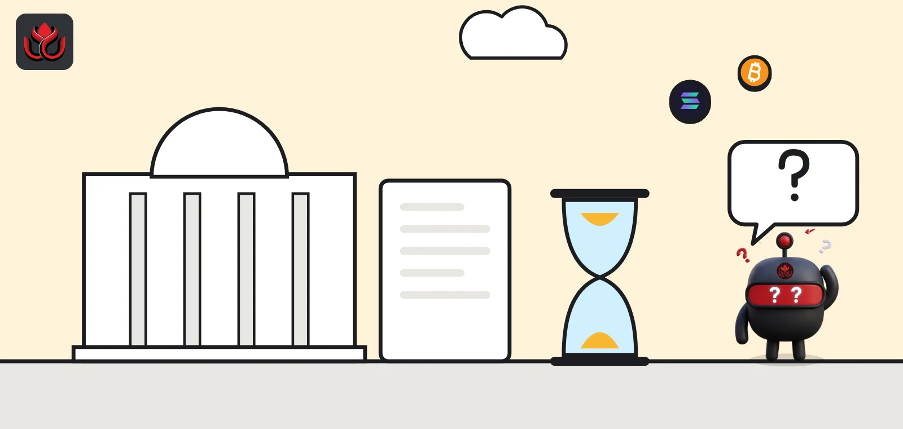
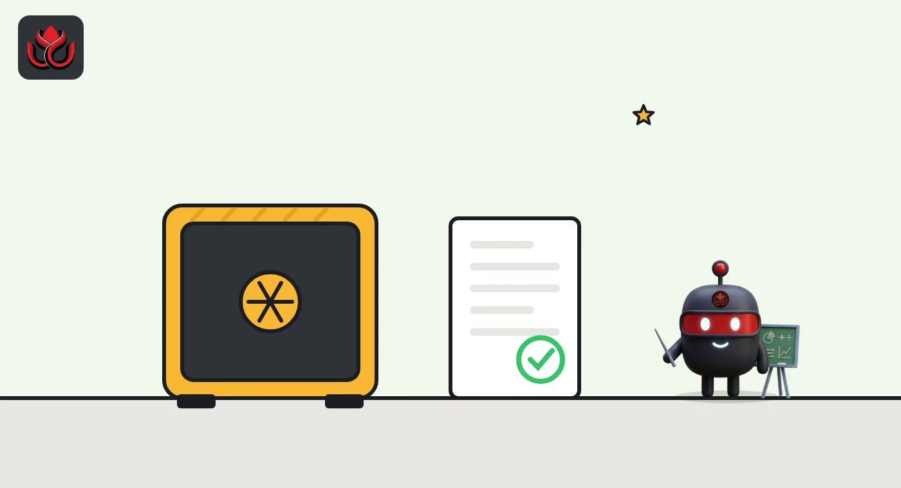

Vietnam crypto law explained: 5 licenses, VND 200M fines and a 6-month clock
Crypto is legally defined in Vietnam, and a five-year pilot lets up to five licensed local firms run crypto markets. As of the latest official update on October 6, 2026, no provider had been licensed, so the six-month countdown for investors using unlicensed platforms has not started.

Key points
- Two government acts set the rules: Resolution 05/2025/NQ-CP, which runs the crypto pilot, and Decree 284/2026/ND-CP, which sets the fines.
- Only firms licensed by the Ministry of Finance may run a crypto market, and the pilot caps them at five. Each needs at least VND 10,000 billion in paid-in capital.
- Fines of up to VND 200 million for firms and VND 100 million for individuals have applied since September 1, 2026.
- Investors who trade outside a licensed provider face penalties only six months after the first license is granted. As of October 6, 2026, the government news portal said none had been.
Is crypto legal in Vietnam?
Owning crypto is not banned, and the government now defines it in law. Resolution 05/2025/NQ-CP describes a crypto asset as a type of digital asset that uses cryptography or similar technology to authenticate it. Securities, digital forms of fiat money and other financial assets are excluded from that definition (Article 3.2).
Recognition is not the same as an open market. Running a crypto exchange, advertising crypto services or issuing tokens is allowed only inside the government pilot, under strict conditions.
What is the crypto pilot?
The pilot was created by Government Resolution No. 05/2025/NQ-CP, signed by Deputy Prime Minister Ho Duc Phoc on September 9, 2025, and effective the same day. It runs for five years, and the market keeps operating under the resolution afterward until it is changed or replaced, according to the full text published by the government.
Its main rules:
- Who leads: the Ministry of Finance, working with the State Bank of Vietnam and the Ministry of Public Security. The ministry selects up to five crypto asset service providers.
- Currency: offering, issuing, trading and paying for crypto in the pilot must be done in Vietnamese dong.
- New tokens: issuers must be Vietnamese companies, and tokens must be backed by real assets. Securities and fiat money cannot be the backing asset. Tokens issued under the pilot may be offered only to foreign investors.
- Tax: crypto transactions are taxed like securities until a dedicated crypto tax policy is issued.
The resolution lists four services a licensed provider may offer (Article 3.3): running a trading market, proprietary trading, custody and an issuance platform. Margin trading, derivatives, staking and lending are not on that list. Investors may hold accounts at several providers, but only one account at each (Article 16.1).

What does it take to get a crypto license?
The bar is high on purpose. The Ministry of Finance began accepting applications on January 20, 2026, under Decision 96/QD-BTC, the government news portal reported. The State Securities Commission receives the files. Under Article 8 of Resolution 05, an applicant must:
- be a Vietnamese company with at least VND 10,000 billion of paid-in charter capital, paid in dong;
- have at least 65% of its capital from organizations, and more than 35% from at least two banks, securities firms, fund managers, insurers or technology companies;
- keep foreign ownership at or below 49%;
- meet Level 4 information security standards before it starts operating;
- have a chief executive with at least two years in finance, a technology chief with at least five years in IT, and at least 10 certified cybersecurity staff and 10 staff with securities practice certificates.
Each person or company may put capital into only one licensed provider.
Has anyone been licensed yet?
Not as of the latest official update LC Insight could find. On October 6, 2026, the government news portal said no digital asset service provider had yet been licensed by the competent authority. In the same article, the Ministry of Finance answered a reader's question by quoting the pilot's six-month rule.
In June, regulators at the State Securities Commission said they had asked applicants to finish meeting the IT, Level 4 security and capital requirements, according to a June 5 report on the portal. An official there said progress depends mainly on whether firms can meet the capital and cybersecurity bars.
Which companies want to run Vietnam's first crypto exchanges?
The applicants are mostly big names from banking and brokerage, which fits the capital and shareholder rules. When applications opened in January, about 10 securities firms and banks had announced plans to offer crypto trading once licensed, the government portal reported. Examples it named:
- SSI, through SSI Digital;
- VIX Securities, through VIXEX;
- MB, working with Dunamu, the South Korean company that operates the Upbit exchange;
- Techcombank, through TCEX;
- VPBank, which said it was ready to launch once licensed.
Announcing a plan is not the same as being licensed. Only the Ministry of Finance can grant a license, and it can pick no more than five providers for the whole pilot.
Who supervises the market day to day?
The Ministry of Finance grants licenses and reviews each complete file within 30 days in coordination with the Ministry of Public Security and the State Bank of Vietnam, under Article 10.4 of Resolution 05. In practice, the State Securities Commission (SSC), which sits under the ministry, receives the applications and advises the ministry on them.
At a June 5, 2026, conference at the SSC, Deputy Chairman Bui Hoang Hai said the core task was to build a transparent and safe financial ecosystem, according to the government portal. Officials there also stressed investor protection and anti-money laundering checks, and the State Bank called for stronger customer identification and international cooperation.
Licensed providers carry their own duties too, such as verifying the identity of every investor who opens an account. Decree 284 sets fines for failures, listed below.
What are the fines under Decree 284?
Decree No. 284/2026/ND-CP has applied since September 1, 2026, and stays in force for as long as the pilot resolution does, the government said. The maximum is VND 200 million for an organization and VND 100 million for an individual. Fine amounts are set for organizations, and an individual pays half, according to the Vietnamese summary. Selected bands:
- VND 180 to 200 million for providing crypto services, or advertising them, without a license;
- VND 150 to 200 million for unlawfully collecting, selling or disclosing crypto account data;
- VND 50 to 70 million for a provider that fails to verify investors' identities;
- VND 30 to 50 million for a domestic investor who trades outside a licensed provider;
- VND 70 to 100 million for a domestic investor who trades tokens offered or issued to foreign investors.
LC Insight covered the decree in detail in Vietnam's crypto fines are live.
Top of selected fine bands under Decree 284 (organization rates)
VND million
Source: Government of Vietnam, summary of Decree 284/2026/ND-CP. Individuals pay half.
Can people in Vietnam still use offshore exchanges?
For now, there is a gap. Article 7.2 of Resolution 05 says that six months after the first crypto asset service provider is licensed, domestic investors who trade crypto outside a licensed provider face administrative penalties or criminal liability, depending on severity.
When a reader asked about this on October 6, the Ministry of Finance quoted that clause: the clock runs from the first license. Decree 284 taking effect on September 1, 2026, did not start it. Because no license had been granted, according to the government portal, the countdown had not begun.
Businesses do not get that grace period. Offering or advertising crypto trading services without a license is fineable now.
LC Insight analysis
This section is our reading of the facts above, not a statement of fact.
- The six-month clock is the date that matters most for ordinary users. The day the first license is announced, the countdown starts for anyone still trading on unlicensed platforms.
- A VND 10,000 billion capital floor and a bank-heavy shareholder rule mean the first licensed exchanges will almost certainly be backed by big banks and brokers, not crypto startups.
- The real gap is product range. With no derivatives, lending or staking among the four allowed services, active traders may stay on offshore platforms right up to the deadline.
What's next
- The first license from the Ministry of Finance, which starts the six-month clock
- A dedicated crypto tax policy to replace the securities treatment
- Any amendment to Resolution 05 widening the services allowed
Frequently asked questions
Is bitcoin legal tender in Vietnam?
Resolution 05 does not make crypto a currency. Inside the pilot, offering, trading and payment for crypto must all be made in Vietnamese dong.
How many crypto exchanges can Vietnam license?
Up to five crypto asset service providers during the pilot, selected by the Ministry of Finance under Resolution 05/2025/NQ-CP.
How is crypto taxed in Vietnam?
Under Resolution 05, crypto transactions and transfers are taxed the same way as securities until a dedicated crypto tax policy is issued.
Can foreigners own a Vietnamese crypto exchange?
Only a minority stake. Total foreign ownership in a licensed provider is capped at 49% of charter capital under Article 8 of Resolution 05.
Disclaimer. This article is based on public information and the sources listed below as of the update time shown. It is for information only and is not investment, legal or tax advice. Figures may change as companies and authorities publish new data.
Sources
- Government of Vietnam, full text of Resolution 05/2025/NQ-CP (September 9, 2025)
- Government news portal, crypto license applications open January 20, 2026
- Government news portal, Ministry of Finance on trading outside licensed providers (October 6, 2026)
- Government news portal (English), administrative sanctions in crypto assets (Decree 284)
- Government news portal, Decree 284 fines summary (July 17, 2026)
- Government news portal, State Securities Commission conference on crypto assets (June 5, 2026)